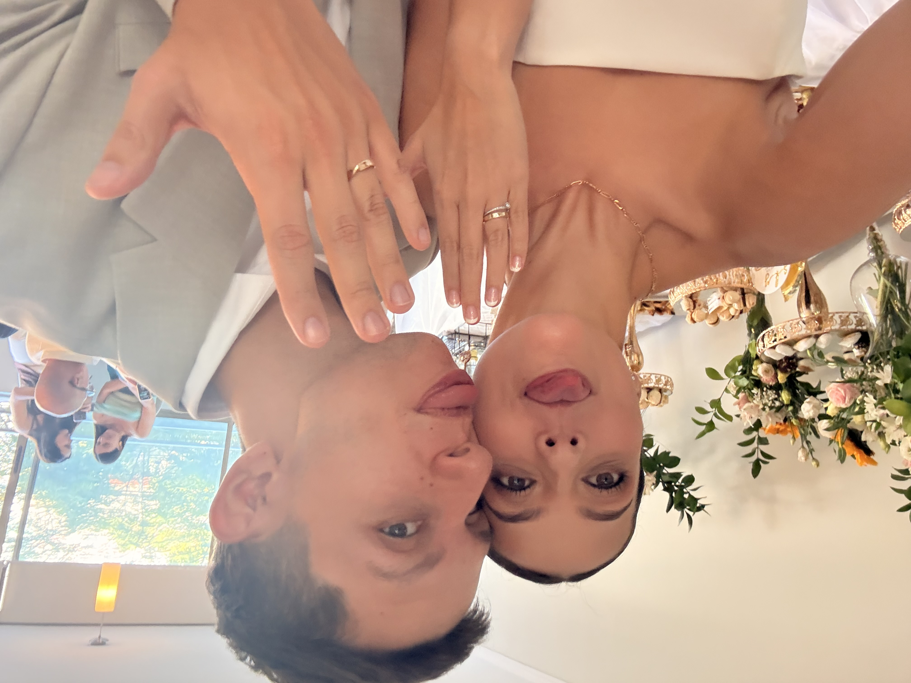
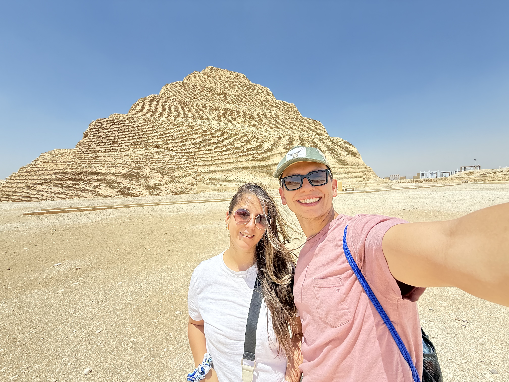
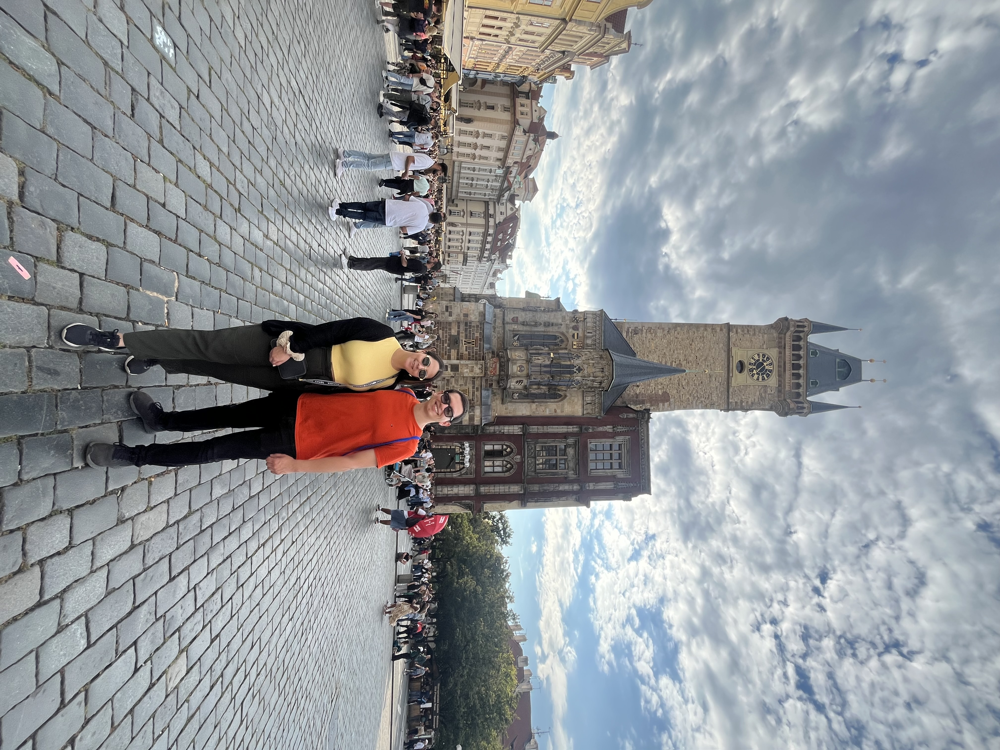
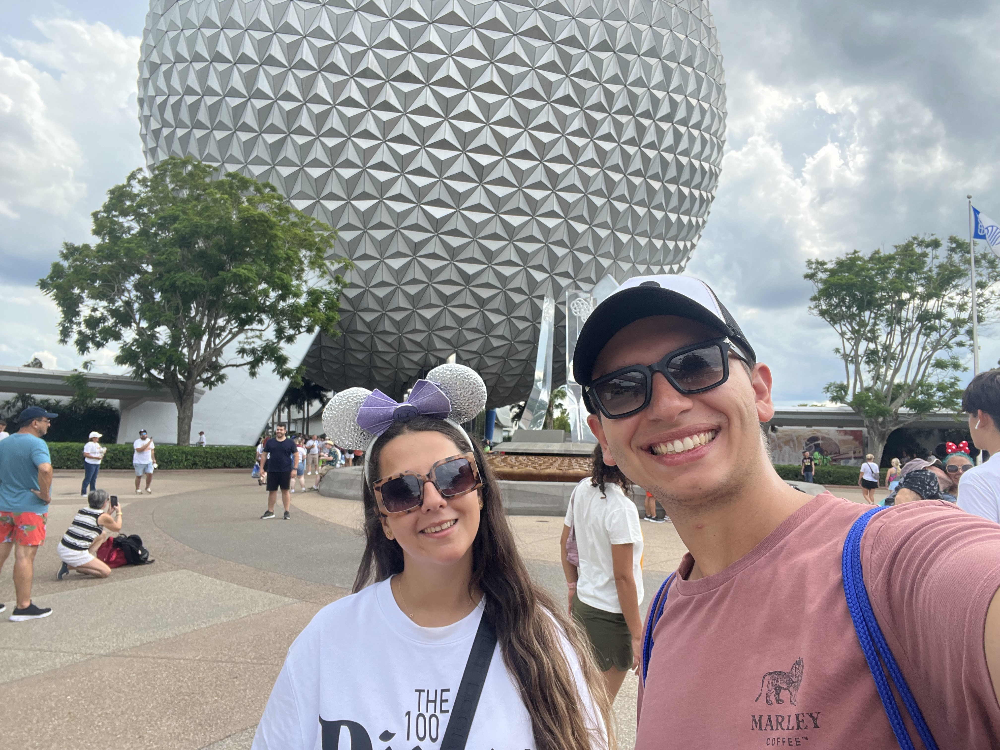
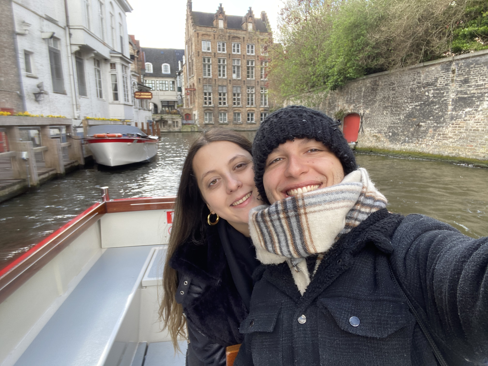
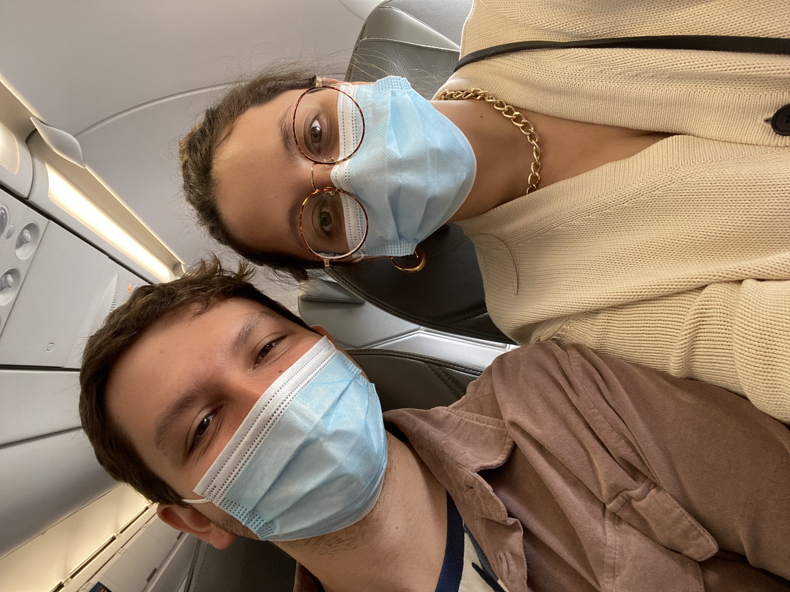
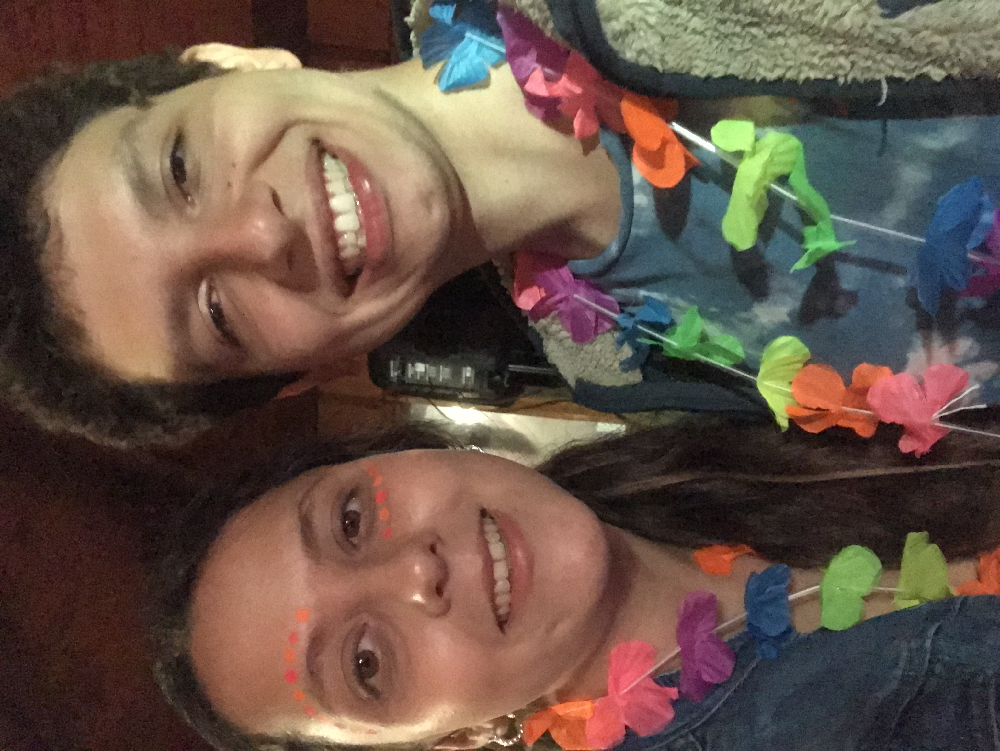
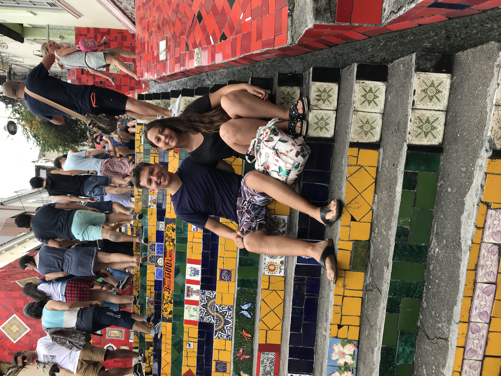
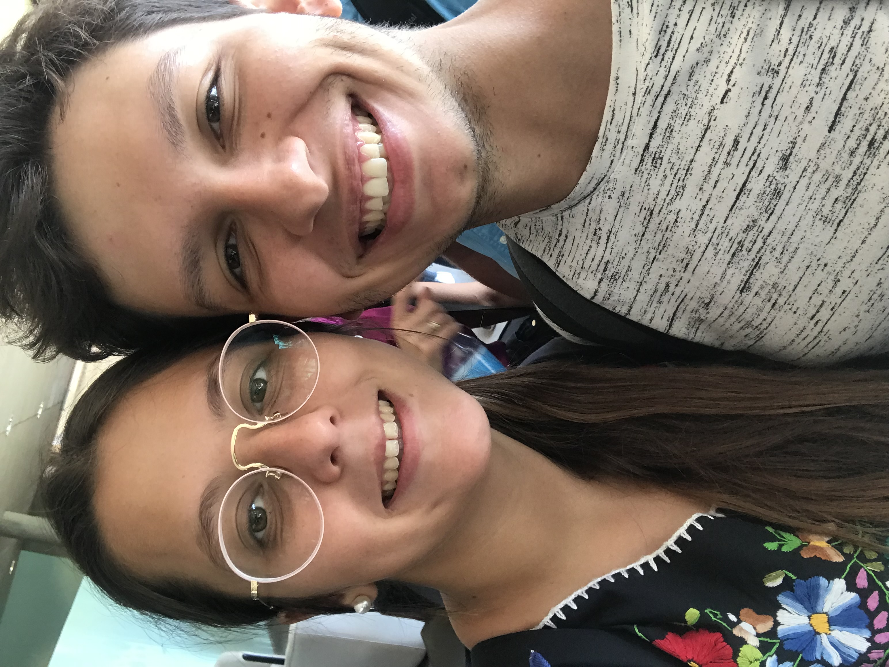

Nuestro próximo destino:
para siempre
Javiera Francisca Meza Ledezma &
Gonzalo Alejandro Cortés Uarac
Después de ocho años construyendo nuestra historia, estamos felices de comenzar una nueva etapa. Queremos compartir este momento con todas las personas que nos han acompañado en el camino.
Cuánto falta
—días —horas —min —seg
Sábado 5 de diciembre de 2026 · 17:00 hrs
Dónde
Entre Nogales
Buin, Región Metropolitana
La ceremonia y celebración se realizarán en Buin.
Si vienen desde Santiago, les recomendamos considerar una hora de viaje. El recinto cuenta con estacionamiento gratuito.
Dress code,elegante
-
Ellas
Vestido largo o midi. Preparamos un tablero de inspiración para quienes quieran algunas ideas.
Inspiración para invitadas -
Ellos
Traje formal oscuro, con camisa y corbata.
-
Importante
El blanco y sus tonalidades están exclusivamente reservados para la novia.
Como la celebración será al aire libre, les recomendamos llevar algo abrigado para la noche.
Nosotros
Nuestra historia, año a año









Desliza para ver más →
Regalos
Un detalle para nuestra nueva etapa
Para quienes quieran acompañarnos con un regalo, preparamos una lista en Paris. También dejamos disponibles nuestros datos de transferencia para quienes prefieran esa alternativa.
Elegir un regaloDatos:
- Nombre
- Gonzalo Cortés Uarac
- RUT
- 19135707-8
- Banco
- Santander
- Tipo de cuenta
- Corriente
- Cuenta
- 75487754
- Correo
- matrijaviygonza@gmail.com
Formulario
Confirmen su asistencia antes del 25 de octubre
El formulario toma solo dos minutos. Por favor, respondan tanto si podrán acompañarnos como si no.
Confirmar asistencia